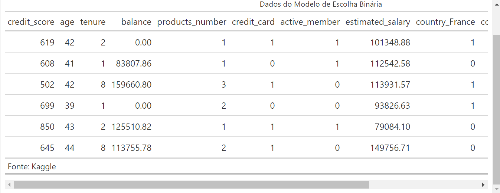

Olá, tudo bem?
Em muitas situações do nosso cotidiano, lidamos com questões cujas respostas não pertencem a um espaço contínuo e ordenado, mas sim a categorias bem definidas, como sim ou não. Essas situações exigem uma abordagem específica na análise de dados, especialmente quando queremos estimar a probabilidade de um evento ocorrer.
Neste post, exploro os modelos de resposta binária, que são ferramentas poderosas para prever a ocorrência de eventos com duas possíveis respostas. Entre esses modelos, o mais utilizado é a regressão logística. Como exemplo prático, aplico esse modelo para estimar a probabilidade de um cliente de um banco cancelar ou manter sua conta.
Dados de Clientes do Banco
Uma característica fundamental dos dados em modelos de escolha binária é que a variável dependente \(Y_i\) não é contínua e, portanto, não segue uma distribuição normal. Em vez disso, ela assume valores discretos, geralmente representados por zeros e uns, indicando dois possíveis estados ou categorias.
Esse comportamento difere dos modelos usados para dados contínuos, exigindo métodos específicos para análise e interpretação. Vale lembrar que, embora existam outros tipos de variáveis discretas, como em modelos de contagem (por exemplo, número de ocorrências), eles não são o foco deste post. Aqui, concentramo-nos exclusivamente em variáveis binárias, ideais para situações de escolha entre duas alternativas, como prever se um cliente cancelará ou manterá sua conta bancária.
Variáveis Categóricas
As variáveis presentes nos dados frequentemente incluem informações categóricas, como o país de origem do cliente ou o gênero (masculino ou feminino). No entanto, palavras ou categorias nominais não podem ser diretamente inseridas em modelos matemáticos. Para resolver essa questão, utilizamos um recurso essencial na modelagem econométrica: as variáveis Dummy.
- Variáveis Dummy
- As variáveis Dummy são ferramentas que convertem categorias em valores numéricos, geralmente 0 ou 1. Cada coluna representa a presença ou ausência de uma característica específica. Por exemplo, ao codificar a variável gênero, criamos uma coluna onde, 1 indica que o cliente é do gênero masculino, 0 indica que não é (ou seja, feminino, se for uma variável binária).
Armadilha das Dummies
Ao utilizar variáveis Dummy, é importante ter cuidado com a multicolinearidade perfeita, um problema que ocorre quando uma coluna pode ser expressa como uma combinação linear exata de outra(s) coluna(s). Esse cenário inviabiliza a estimação dos coeficientes em modelos de regressão.
Considere uma variável categórica como gênero com duas categorias: masculino e feminino. Se criarmos duas colunas Dummy (uma para cada categoria), teremos:
- Masculino: 1 para homens, 0 para mulheres.
- Feminino:: 1 para mulheres, 0 para homens.
Nesse caso, se a coluna Masculino for 1, a coluna Feminino será, obrigatoriamente, 0, e vice-versa. Isso cria uma relação linear exata entre as duas colunas, causando multicolinearidade perfeita.
Para quem tem familiaridade com álgebra linear, isso significa que a matriz de variáveis explicativas torna-se singular (não invertível), o que impede a solução do modelo de regressão.
A regra de bolso é simples: sempre utilize \(N−1\) Dummies, onde \(N\) é o número de categorias. Ou seja, devemos excluir uma categoria ao criar as variáveis Dummy. Essa categoria omitida servirá como base de comparação para as outras.
No exemplo do gênero, você pode incluir apenas a coluna Masculino (0 ou 1), com Feminino sendo a categoria base implícita. Isso garante que o modelo funcione corretamente e evita problemas de multicolinearidade.
Abaixo, podemos observar como os dados são estruturados após a criação das variáveis Dummy. Neste exemplo, as colunas referentes a feminino e ao país Espanha foram omitidas, seguindo a regra para evitar multicolinearidade:

Conclusão
Por hoje é só.
Fiquem com Deus!
Tchau.
Todos os códigos que foram necessários para o desenvolvimento desta análise estão disponível em meu Github.